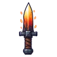
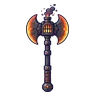
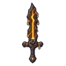

โกเลมลาวา
มอนธาตุไฟ Lv 68–99
เจอที่
| แมพ | โซน | Lv | ภูมิภาค |
|---|---|---|---|
| ภูเขาไฟหลับ | 74–79 | แดนใต้สีแดง | |
| ภูเขาไฟหลับ | สุสานมังกร | 78–82 | แดนใต้สีแดง |
| ปล่องภูเขาไฟ ชั้น 2 · ถ้ำมังกร | 94–99 | แดนใต้สีแดง | |
| ลานหินออบซิเดียน | 68–84 | แดนใต้สีแดง | |
| ทะเลสาบลาวาเย็น | 68–84 | แดนใต้สีแดง | |
| ทะเลสาบลาวาเย็น | ท่าหินกลางลาวา | 79–84 | แดนใต้สีแดง |
| ปากปล่องควันดำ | 68–84 | แดนใต้สีแดง | |
| หอดาวร่วง | ชั้นหอดาวร่วง | 89–99 |
ค่าสถานะตามเลเวล
| Lv | HP | ATK | DEF | MDEF | EXP | Job |
|---|---|---|---|---|---|---|
| 68 | 51,830 | 173–260 | 49 | 12 | 111 | 83 |
| 83 | 92,253 | 223–334 | 60 | 15 | 133 | 100 |
| 99 | 151,250 | 290–436 | 60 | 18 | 157 | 118 |
ตีด้วยธาตุไหนดี
แรงขึ้น: น้ำ ×1.5 พิษ ×1.25
เบาลง: ดิน ×0.5 ไฟ ×0.25
วัตถุดิบที่ดรอป
| ของ | โอกาส | |
|---|---|---|
| แกนลาวาเดือด | 50% | 1 ชิ้น (15% ได้ 2) |
อุปกรณ์ที่ดรอป (8)
| ของ | โอกาส |
|---|---|
| 0.25% | |
| 0.25% | |
| 0.25% | |
| 0.25% | |
| 0.25% | |
 มีดคู่เหล็กแดงเตาหลอม | 0.06% |
 ขวานยักษ์เตาหลอม | 0.06% |
 ดาบใหญ่ลาวา | 0.06% |
สกิล
ร่างแข็ง (Lv 25+) · ร่างแข็ง (Lv 60+) · ทุบพื้น (Lv 60+)